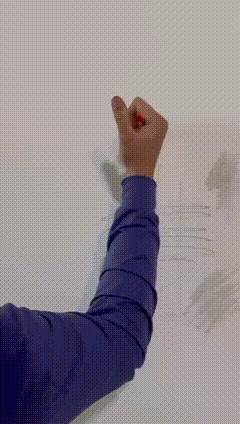

Как навсегда избавить
малярные работы
от брака и бесконечных переделок


«Да там просто валиком покатать» — говорят заказчики. Но если треснет черновая штукатурка или поведет гипсокартон, винят маляра, ведь дефект вылез на его финишной краске.
Один случайный скол на углу при монтаже кухни означает полную переделку. С хрупкими материалами нельзя просто затереть изъян — приходится заново перекатывать всю плоскость от угла до угла.
Постоянный поток гостей с чемоданами, мокрые полотенца на стенах и высокая влажность быстро уничтожают нежную отделку. На первой же уборке обычная краска смывается до лысых пятен.
Шпатлевка OTTINGER создана на эластичной полимерной базе. В отличие от жесткого гипса, она гасит микродеформации стен и случайные удары, защищая углы от сколов.
Микроволокна связывают состав шпатлевки изнутри, удерживая швы от трещин. Это позволяет полностью отказаться от долгой поклейки стеклохолста и клея.
Финишная краска содержит керамические микрочастицы. Она образует сверхплотную мембрану: следы от сумок, обуви или жира отмываются простой водой без затертостей.
Намертво связывает строительную пыль, укрепляет черновую штукатурку и ГКЛ перед шпатлеванием.
Готовая полимерная шпатлевка для финишного выравнивания. Обладает ультратонким нанесением и легкой шлифовкой.
Премиальная матовая краска с керамическими добавками. Грязеотталкивающая, выдерживает интенсивное мытье.
Влагостойкие шпатлевки для стыков, грунт-краски Q3/Q4, глубокоматовые интерьерные финиши и клей. Получите полный технический каталог и прайс-лист для вашего объекта в Сочи.
Стены подготовлены без использования стеклохолста. Финишный слой краски с керамикой выдерживает влажную уборку и любые бытовые пятна.
Проходная зона с экстремальной нагрузкой. Упругая полимерная база шпатлевки защищает углы от сколов при ударах чемоданами и колясками.
Стены подготовлены под строгий проявочный свет (качество Q4). Глубокоматовая краска не дает бликов и затертостей в проходных зонах.
Сдают объекты вовремя, не переделывают работу за мебельщиками и экономят бюджет за счет исключения холста и клея.
Уверены, что их сложные проекты с глубокими матовыми стенами не затрутся и не пойдут трещинами через месяц после сдачи.
Получают долговечный ремонт, который не требует обновления и косметических подкрасок перед каждым туристическим сезоном.
Не верьте на слово — проверьте все лично. Мы бесплатно приедем на ваш объект в Сочи со своими материалами. Вы сами нанесете шпатлевку, попробуете ударить ее инструментом, поцарапать шпателем или отмыть грязное пятно на краске.
Заказать бесплатный тест-драйв